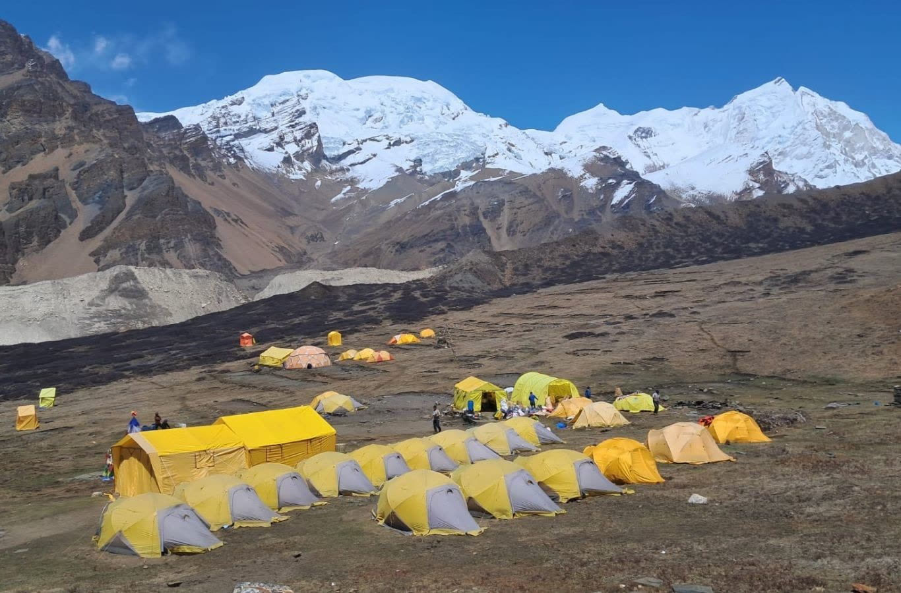
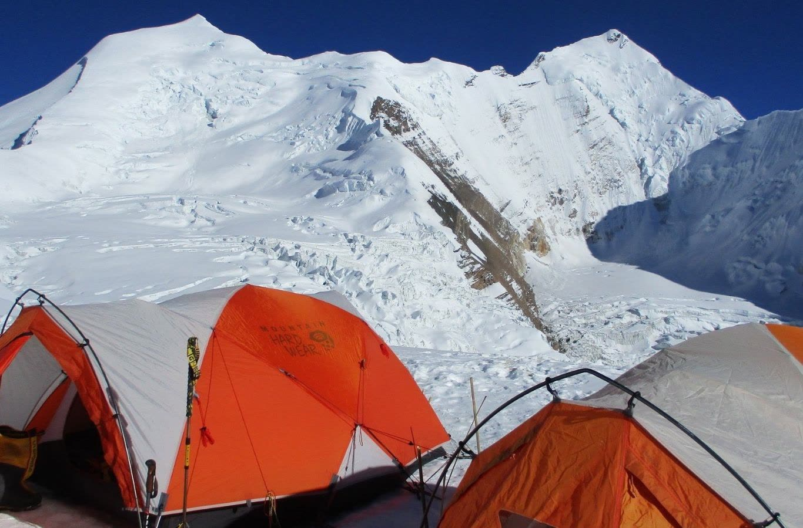
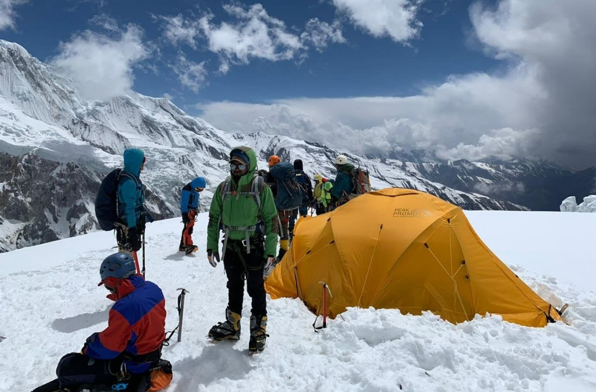
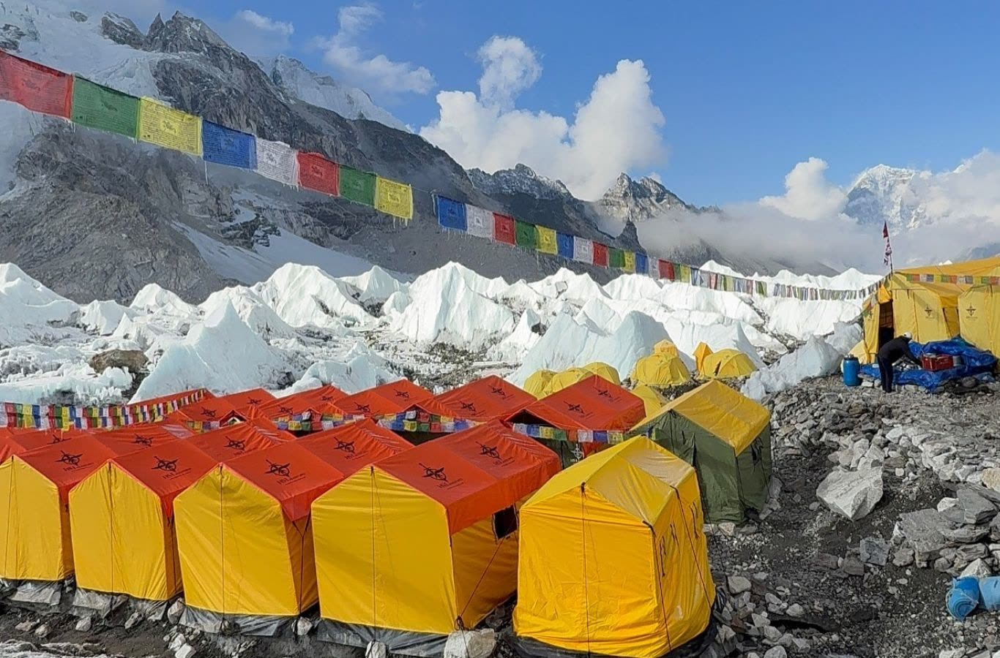
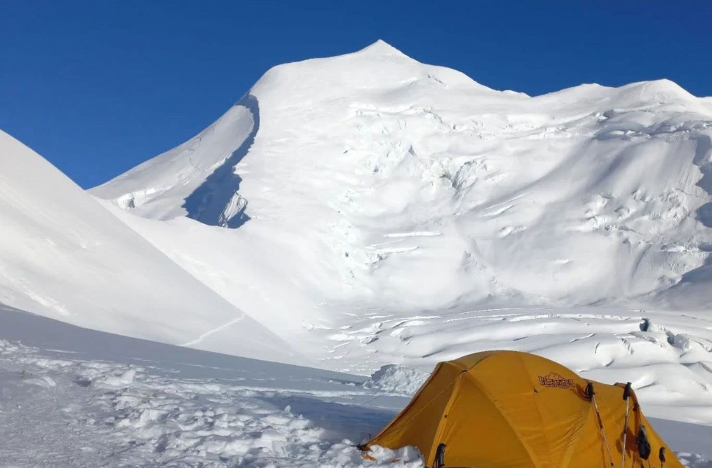

Himlung Himal Expeditions
Himlung Himal Expedition with Nepal Unique Treks is a 31-day guided journey to the Himlung Peak, located at an altitude of 7,126 meters above sea level. This peak sits still and majestically in the remote reaches of the Nar-Phu Valley Trek near the Tibetan border.





Key Trip Facts
Trek Overview
Trip Highlights
Himlung Himal Expedition Highlight
An opportunity to go for an expedition to the Himlung peak (7,126 meters).
Strategic training peak for anyone trying to climb the 8000er peaks like Everest.
Outstanding panoramic views of Annapurna II, Manaslu, Kang Guru, and the remote Tibetan plateau.
Chances to pass through ancient Tibetan-influenced villages like Phu-Gaon, especially in Nar & Phu villages.
It is not extremely technical, but it is an adventurous peak climb in the Himalayas of Nepal.
Chances to camp and spend some amazing nights under the stars and beside glaciers.
A journey to one of the remote yet accessible peak climbing trails in Nepal.
Outstanding scenes, experience-worthy tradition and culture, along with warmly welcoming locals in every village that we crossed during the expedition.
Himlung Himal Expedition Overview
Himlung Himal Expedition with Nepal Unique Treks is a 31-day guided journey to the Himlung Peak, located at an altitude of 7,126 meters above sea level. This peak sits still and majestically in the remote reaches of the Nar-Phu Valley Trek near the Tibetan border. Besides, this peak expedition adventure leads trekkers into a less-crowded yet equally awe-inspiring 7000m+ Himalayan peak. Moreover, the ascent to the Himlung Himal Expedition also takes us into an isolated pocket of Nepal where raw beauty meets authentic Tibetan culture.
This 31-Day Himlung Expedition begins as you arrive in Kathmandu and drive to Besisahar and then to Koto, the gateway to the restricted Nar-Phu region. From there, the trail winds through alpine forests, medieval stone hamlets, yak pastures, and glacier-fed rivers as we cross several villages, like Meta and Pho Gaon. This is the village where we acclimatize before going further for a short trek to Himlung Base Camp (4,850m). The push to the summit begins on the ninth day and goes all the way through 16 days.
During your ascent to the Peak Climbing in Nepal, offers one of the most amazing experiences. Furthermore, the Himlung Himal is considered one of the more "approachable" 7000-meter peaks, making it ideal for experienced trekkers transitioning into high-altitude mountaineering. Whether you’re aiming to build your mountaineering resume or craving the serenity of the lesser-traveled Nar-Phu Valley, the Himlung Himal Expedition promises a profound, life-changing journey amid Nepal’s hidden highlands.
With steady slopes, low objective danger, and the strong logistical support of the Nepal Unique Treks & Expeditions team, this expedition offers a balanced blend of adventure, challenge, and safety.
Permits and Travel Insurance
Climbing the Himlung Himal (7,126m) involves entering restricted zones and traversing protected conservation areas in Nepal. To enter any of such restricted or conserved areas, climbers must obtain permits. Check the list out to know all the permits required for the Himlung Expedition:
Nar Phu Valley Permit: Required as we will be passing through the Nar Phu Valley.
Annapurna Conservation Area Permit: As we will cross through the Annapurna Conservation Area.
Trekkers Information Management System: To help the authorities keep track of all the trekkers.
Climbing permit: A climbing permit is needed for any expedition or peak climbing package.
If you book the Himlung Expedition package with Nepal Unique Treks & Expeditions, our local representatives will assist you with obtaining all the permits to make it easy for you.
Travel Insurance for Himlung Himal Expedition
Other than that, we also recommend that climbers purchase travel insurance that covers an altitude of over 7000 meters. Here is what travel insurance can help you with during the Himlung Himal Expedition:
Emergency Helicopter Evacuation
In case of serious altitude sickness, injury, or other medical emergencies, insurance will cover the cost of helicopter evacuation from remote mountain areas to Kathmandu or the nearest medical facility.
Trip Cancellation or Interruption
If your expedition is delayed or cancelled due to weather, natural disasters, personal health, or other unforeseen circumstances, insurance helps recover your non-refundable costs.
Loss or Theft of Gear
Your insurance can reimburse you if your essential trekking or climbing equipment is lost, damaged, or stolen during transit or on the trail.
Personal Liability and Legal Assistance
Offers protection in the rare event of causing accidental injury to others or property damage, along with legal support if needed abroad.
Medical Expenses
Covers hospitalisation, doctor visits, and medications if you fall ill or get injured during the expedition, including high-altitude-related conditions.
Himlung Expedition Cost for 2026 and 2027
With Nepal Unique Treks & Expeditions, the climbers can expect an affordable and reasonable cost for the Himlung Expedition package in 2026 and 2027. Besides, we also make sure to provide the climbers with transparent prices, which means there will be no hidden costs at all.
To know more about the cost of the Himlung Himal Expedition, please check the table below:
Himlung Himal Expeditions Itinerary: Day by Day
16 Days program for Himlung Himal Expeditions. Daily timings and sequences remain flexible according to weather, flight operations, and group pace.
Day 1: Arrival in Kathmandu Airport and transfer to request category hotel accommodation in Kathmandu (1350M/4430ft)
Approx. 1,345 m / 4,413 ft
The Himlung Himal Expedition package with Nepal Unique Treks & Expeditions begins as you arrive at Tribhuwan International Airport (Kathmandu). As you land at the airport, our guides will drive you to the hotel, where the staff will welcome you with a refreshing drink. Once checked in, the rest of the day is yours to relax and recover from your journey. If you arrive a little early in the afternoon or the evening, you can go for a quick stroll around the Thamel area, a lively tourist district packed with cafes, shops, and cultural curiosities. In the evening, we invite you for a delicious and locally prepared Nepali cuisine.
Day 2: Preparation, Shopping and Briefings at Departments of tourism. Hotel accommodation
Approx. 1,345 m / 4,413 ft
On the second day, you can explore the marketplaces and go for the last-minute shopping. Make sure to take proper instructions from the guides to know everything that needs to be included. However, you will have to attend a comprehensive expedition briefing at the Department of Tourism in the morning. Here, the authorities will review your permits, safety protocols, and environmental guidelines. Furthermore, this is also where you will meet the rest of the expedition crew and get the final instructions from the guides. After that, you can freely explore the city area, do some shopping, or stroll in the marketplaces. In the evening, you’ll return to your hotel for a relaxed night in the capital. Overnight stay and dinner will be done in Kathmandu for the second day as well.
Day 3: Drive from Kathmandu to Besisahar (823m/2700ft, 08hrs). Lodge accommodation.
Approx. 823 m / 2,700 ft
After having a delicious breakfast, we set off on a scenic drive to Besisahar, a settlement at an altitude of 823 meters above sea level. This drive offers a mix of scenic riverbanks, terraced fields, and glimpses of distant hills. Even though it will be a long drive, it’s rewarding, offering a slow transition from the chaotic charm of Kathmandu to the rural beauty of the Himalayas. Besides, we will also pass through small towns like Mugling and Dumre before reaching Besisahar, the gateway to many Annapurna and Manaslu region treks. As you reach Besisahar, you can expect to see a bustling town nestled at the foothills of the Himalayas. Besides, this town also serves as he starting point for several trekking and expedition routes. Not a very big town, but of course, a town offering comfortable lodge accommodation, basic shops, and views of green hills. Believe us, exploring Besisahar marks a perfect entry to the Himlung expedition journey. The overnight stay and dinner will be arranged in Besisahar.
Day 4: Drive from Besisahar to Koto (2610m/8,563ft, 05hrs), lodge accommodation.
Approx. 2,610 m / 8,563 ft
We have one more drive to go, which takes us from Besisahar to Koto. As we need to cover much of a rugged section, we will arrange a 4WD jeep. Besides, the route follows the Marsyangdi River and cuts through dramatic gorges, waterfalls, and picturesque villages. Furthermore, the climbers can also witness changes in the vegetation and climate as dense forests give way to pine and fir as we gain altitude. Let us also tell you that we will drive over some bumpy roads, especially in parts between Dharapani and Koto, so be prepared for a bit of a Himalayan massage! Within about 5 hours of driving, we will finally reach Koto, a small but vital village that serves as a checkpoint before entering the restricted Nar-Phu and Himlung regions. Surrounded by towering cliffs and alpine forests, it offers basic yet welcoming lodge accommodation. Moreover, the climbers can also expect crisp mountain air, the sound of the river nearby, and views of snow-dusted peaks in this village. Interact with the locals and stroll around the village before heading for dinner and an overnight stay.
Day 5: Trek from Koto to Meta (3560m/11,680ft, 06hrs), lodge accommodation.
Approx. 3,560 m / 11,680 ft
The official walking journey in the Himlung expedition map initiates on the fifth day. After breakfast, the guides lead us on a trail that enters the restricted Nar-Phu Valley through a narrow gorge carved by the Nar Khola. Besides, we will also walk past pine and fir forests, crossing suspension bridges and scenic waterfalls. As we gain altitude, the scenery becomes more dramatic as lush valleys slowly give way to dry, rocky terrain with sparse vegetation. Within about 6 hours, we will step into the Meta village, a settlement at an altitude of 3560 meters above sea level. This high-altitude Tibetan-style village makes the transition from forest to barren alpine landscape. With very few inhabitants and only seasonal lodges, Meta offers a quiet and raw Himalayan experience. Furthermore, the climbers also start feeling colder from here. However, the clear skies, stars, and sense of isolation bring a deeply peaceful atmosphere that sets the tone for the remote and spiritual days ahead.
Day 6: Trek from Meta to Phu-Gaon (4200m/13,780ft, 05hrs), lodge accommodation.
Approx. 4,200 m / 13,780 ft
On the sixth day, we will leave Meta and walk towards Phu Gaon, marking the entrance deeper into the heart of the Nar Phu Valley. Talking about the trail, it is nothing short of spectacular, passing through arid alpine landscapes, ancient chortens, and crumbling mani walls that echo Tibetan Buddhist culture. As we keep walking, the trail gradually ascends, hugging cliffside paths and narrow gorges before opening up to the expansive valley. Also, we recommend that climbers be attentive, as they might encounter blue sheep grazing on steep slopes. After about 5 hours, we finally reach Phu Gaon, one of the most significant landmarks of the entire Himlung Expedition route. Sitting at an altitude of 4200 meters, the Phu Gaon offers a fascinating glimpse into traditional Himalayan life, untouched by modern development. Furthermore, the climbers can also visit different ancient monasteries, watch the prayer flags fluttering in the wind, and check out some centuries-old stone houses. We will spend a night and have dinner before continuing the ascent on the next day.
Day 7: Rest day for acclimatation at Phu-Gaun (4080m/13,382ft), Lodge accommodation.
Approx. 4,080 m / 13,386 ft
We've officially crossed 4000 meters upon reaching Phu Gaun. Do you know what that means? Well, it means that it's time to acclimate before ascending further. However, we will not stay idle in the hotel; instead, the guides will take you for some hikes around the ridges or take you to visit the Tashi Lhakhang Monastery. Let us tell you that this is one of the oldest monasteries of the entire Himlung Expedition region. Spending the full day in Phu also gives you time to soak in the village's unique Tibetan culture. Here, the climbers can also see monks performing rituals or women spinning prayer wheels as part of their daily routine. Therefore, this entire day serves as a day to relax, prepare, and stay back before ascending higher on the trail.
Day 8: Trek from Phu-Gaon to Himlung base camp (4850m/15,912ft, 04-05hrs) lodge accommodation.
Approx. 4,850 m / 15,912 ft
After spending an acclimatization day in Phu Gaon, we continue on the trail to reach the Himlung Base Camp on the eighth day. After breakfast, the guides lead you towards a more rugged and glacial landscape, winding through a vast alpine wilderness with minimal vegetation. As we gain elevation, we can also notice the stark beauty of the high-altitude terrain. Furthermore, this section of the Himlung Expedition trail also takes us past several glacial streams, scree slopes, and towering cliffs that dominate the landscape. Besides, you can also notice the air growing thinner with each step, but excitement builds as Base Camp comes into view beneath the looming Himlung Himal. As you reach Himlung Base Camp, you will find yourself 4,850 metres above sea level, nestled on a broad, flat moraine with panoramic views of the surrounding peaks. Let us also tell you that this base camp will be your home for the next several days as the Sherpa guides prepare you for the summit. Besides, the guides also ensure to arrange tents, kitchen setups, and communication facilities to make your stay a fully functional expedition base.
Day 9: - 24Climbing period for Himlung Himal (7126m//23,345ft) Camping accommodation.
Approx. 7,126 m / 23,379 ft
The actual climb to the Himlung summit begins on the ninth day and takes a whole 15 days to complete. On the ninth day, the journey initiates from the base camp and goes all the way to the first camp, located at an altitude of 5,450m. The route follows a rocky moraine and gently rising glacier, with patches of ice and scree. Even though this part of the summit push is not technical, it certainly demands stamina. Talking about Camp I, this camp is located on a stable moraine ridge with space for tents and gear. Camp I to Camp II (6,000m / 19,685ft) The route from Camp I to Camp II becomes steeper and snow-covered. Besides, we also recommend the climbers to carry crampons as they are typically required from here onward. Furthermore, this section of the summit ascent also takes us past several crevasses and wind-blown terrain, particularly in the early morning hours. It takes about 4 to 5 hours for us to cover this section of the Himlung Expedition summit push, and after that, we reach Camp II. This camp sits on a snowy plateau and is more exposed, with limited tent space. Camp II to Camp III (6,350m / 20,833ft) This section of the Himlung expedition stands as one of the short but steep sections and also the gateway to the summit zone. Besides, the climb also involves navigating a steeper snow face with occasional icy pitches, requiring careful use of fixed lines and mountaineering technique. While the altitude gain is only about 350m, the thinner air and colder temperatures slow progress. Talking about Camp III, it is an advanced high camp seated on a narrow snowy ridge, used only for a short overnight rest before the summit bid. Camp III to Himlung Himal Summit (7,126m / 23,345ft) and back to Camp II Finally, after so many days of walking on the trail, it's time to make the final push to the summit. We begin the summit push around midnight with a slow, steady climb under headlamps. As we ascend higher on this section of the trail, we rise over sustained snow slopes and a prominent ridge. At times, the trekkers will also walk on a highly icy path depending on the recent weather conditions. The final summit stretch is long and physically demanding, often taking 7–9 hours. Finally, as you reach the summit of Himlung Himal, you can expect some breathtaking views of the Annapurna range, Manaslu, and Tibetan peaks. Moreover, you can also take your time to celebrate, enjoy, and live your best moments at an altitude of 7126 meters above sea level. After that, we will also take time to descend back to Camp II, where the Sherpa guides set up tents and food for the climbers. Camp II to Base Camp The return to Base Camp is all about safety and recovery. After resting overnight at Camp II post-summit, climbers descend gradually through Camp I, often collecting remaining gear on the way. The route is familiar but still requires care, especially if snow or weather has shifted. Besides, the descent typically takes about 5 to 6 hours, and after that, the base camp welcomes you with warm food, proper rest, and celebrations of your Himalayan achievement.
Day 10: Clean the camp and Trek from Base camp to Phu-Gaon (4200m/13,780ft, 6hrs) lodge accommodation.
Approx. 4,200 m / 13,780 ft
Day 25 marks the beginning of the descending trail in the Himlung Expedition package as we make our way from Base Camp to Phu Gaon. The walk begins early in the morning after the climbers have their breakfast. However, before making our way to Phu Gaon, we will also take time to clean the base camp and pack all the trash. Why so? Well, because Nepal Unique Treks & Expeditions promotes sustainable and clean traveling. Therefore, we do not leave behind any trace in this pristine Himalayan environment. The trail back to Phu Gaon is gentler compared to the ascent. However, the walk will be long and yet demanding after the summit effort. As we descend, the oxygen-rich air and warmer temperatures become more noticeable. Upon reaching Phu-Gaon, the familiar stone houses, fluttering prayer flags, and hospitable villagers offer a sense of comfort. Tonight, we rest in a teahouse surrounded by mountain silence and reflection.
Day 11: Trek from Phu-Gaon to Meta (3560m/11,680ft, 5hrs) lodge accommodation.
Approx. 3,560 m / 11,680 ft
On the 26th day, we will make our way from Phu Gaon to Meta, which starts once you get a proper breakfast in the hotel. This section of the Himlung Expedition takes us through some of the scenic and relatively relaxed walk through the beautiful Nar-Phu Valley. Moreover, we will also have to walk through different terraced fields, narrow ridgelines, and Buddhist chortens, taking time to appreciate the unique culture and geography of the region. Located at an altitude of 3560 meters above sea level, Meta offers expansive views and a tranquil setting that contrasts with the bustling energy of the Base Camp days. Furthermore, after such an exciting walk, this village also serves as a perfect place to reconnect with the land and slow the pace before fully returning to lower altitudes. Overnight stay and dinner will be arranged by the Nepal Unique Treks & Expeditions team in a local lodge at Meta.
Day 12: Trek from Meta to Koto (2610m/8,563ft, 05hrs) lodge accommodation.
Approx. 2,610 m / 8,563 ft
Another day calls for another descending journey in the Himlung Expedition as we make our way from Meta to Koto. This familiar section of the trail gradually descends through pine forests, gorges, and cliffside paths, with the sound of the Naar Khola and Marsyangdi rivers keeping us company. Moreover, you will also get to interact with many locals in the villages. Within 5 hours of leaving Meta, we finally reach Koto, where you can witness the trail becoming more populated, hinting at the proximity to busier Annapurna routes. Not to mention, Koto sits as a vibrant and bustling village when compared to other alpine villages like Phu. Besides, you can also expect the hotel, teahouse, or lodge to offer better facilities and a sense of reconnection to the outside world. Overnight stay after dinner will be arranged in Koto.
Day 13: Drive from Koto to Besisahar (823m/27,00ft, 8hrs by jeep) lodge accommodation.
Approx. 823 m / 2,700 ft
Finally, we have ended the walking journey in the Himlung Expedition map, so we will drive today. As you wake up and have your breakfast, our representatives or dedicated drivers will pick you up on a shared jeep and drive you to Besisahar. This 8-hour drive will certainly have bumpy sections, but the views you get? Amazing as usual in Nepal. After such a long walk to the peak of Himlung, you will not have to move your legs much on today's journey. Isn't that amazing? Following an adventurous drive through some dirt roads that go all the way past the forests, waterfalls, and across suspension bridges, we finally reach Besisahar. With mobile service, local eateries, and hot showers, this is often a place of both physical and digital reconnection. Furthermore, Besisahar also sits as our final stop in the hills before returning to Kathmandu.
Day 14: Drive from Besisahar to Kathmandu (1345m/4,429ft, takes around 7 hrs. Hotel accommodation.
Approx. 1,345 m / 4,413 ft
On the 29th day, we make our way to Kathmandu from Besisahar, which takes about 7 hours. This journey takes us through lush countryside, bustling market towns, and winding riverside roads. Furthermore, after a few hours of driving, we can also witness some significant stillness of the mountains and the liveliness of the highway increasing. As you reach Kathmandu, the local representatives will take you to the hotel. Check in to your room, and then we recommend that you stroll around the nearby areas. Take your time to relax, enjoy a proper shower, or even spend some relaxing time in the spas, massage centers, or even clubs & bars. In the evening, you can return to the hotel for an overnight stay.
Day 15: Free day, farewell dinner with Culture program in the evening. Hotel accommodation.
Approx. 1,345 m / 4,413 ft
It's finally the second last day of the Himlung Expedition. For that reason, we call this day a free day. You can simply explore the city, check out different significant spots like the Pashupatinath Temple, Swayambhunath Stupa, and Bouddhanath Stupa. Moreover, we also recommend that the climbers visit the durbar squares to get insights into the cultural and traditional artifacts of Nepal. In the evening, we invite you for a farewell dinner, which also features a cultural program. We serve you with authentic Nepali Thali while people also perform a cultural dance program. After that, you can return to the hotel and get a final sleep in Nepal.
Day 16: Transfer to the airport for final departure.
Approx. 1,345 m / 4,413 ft
Well, this is the end of the 31-day Himlung Expedition with Nepal Unique Treks & Expeditions. After you have breakfast, our representatives will drive you to the Tribhuwan International Airport according to your flight schedule. There, we will bid you a final farewell, with the high hope of meeting you again for another adventurous Trekking or Expedition in Nepal.
What is Included (Regular Package)
What is Excluded
Booking Dates & Availability
Packing List for Himlung Himal Expeditions
High-altitude Base Camp kitchens, tents, Sherpa support, oxygen/regulatory logistics included per expedition package.8,000m / 7,000m Climbing Systems (4 items)
Base Camp to Higher Camps (3 items)
Medical & Permit Documentation (2 items)
Read before you book: Himlung Himal Expeditions
Practical logistics derived directly from this package's route facts, inclusions, and elevation profile.
Accommodation & Meals (3-star Hotel. Tea House. Camping)
Accommodation follows the package grade (3-star Hotel. Tea House. Camping) in Kathmandu and along the Himalayan Expedition route. Check your package Includes section for included meals and Kathmandu hotel nights.
Permits & Local Logistics
Transportation is arranged via Private Car. Applicable permits listed in the package inclusions are arranged by Nepal Unique Treks prior to departure.
Route Difficulty & Elevation (7,126 m)
Himlung Himal Expeditions is rated Adventurous with a maximum elevation of 7,126 m. Follow your guide's pacing and stay hydrated throughout the 16 Days itinerary.
Best Time to Visit (Autumn and Spring)
Recommended operating season on the source page: Autumn and Spring. Additional official notes from the source page follow below.
Traveller Useful Information
The spring season (April to early June) and autumn season (late September to early November) have always been the best seasons to go for any trek or expedition in Nepal, including the Himlung Expedition. These periods offer the most favourable weather conditions and stable climbing windows for both the trek and the summit push.
In spring, the region comes alive with blooming rhododendrons and clear skies, offering stunning views throughout the ascent. Temperatures are moderate during the day and cold at night, making it suitable for both trekking and high-altitude camping. More importantly, the snow conditions on the mountain are generally more predictable after the winter season, improving the chances of a safe summit.
The autumn season is known for its post-monsoon clarity, offering crisp air, dry trails, and the best long-range Himalayan views. The weather is stable, and fewer weather-related disruptions are expected during the summit phase. Autumn is also slightly less crowded than spring, which many climbers prefer for a more peaceful experience.
We do not recommend that climbers choose the winter (December to February) or summer/monsoon (June to mid-September) season for the Himlung summit expedition. Why so? Simply put, these seasons do not have proper weather and climatic conditions for the Himalayan ascents. Due to snowfall and rainfall, the routes become very slippery while visibility is at its poorest.
The Himlung Himal Expedition is rated as moderately technical and physically demanding, making it suitable for climbers who have some experience with high-altitude trekking or basic mountaineering. Standing at 7,126 metres (23,345 feet), Himlung is often considered an excellent "starter" 7000m peak before attempting 8000m expeditions.
Here are some of the key difficulties that the climbers might find during this 31-Day Himlung Expedition journey:
Altitude Challenge: The expedition involves sustained exposure to extreme altitude above 5,000 metres for several days. This demands proper acclimatisation, physical stamina, and mental resilience.
Climbing Route: The standard route involves glacier travel, snow slopes, and occasional crevasses. The terrain between Camp I and Camp II is the most technical section, often requiring fixed ropes, ice axes, and crampons for steep snow and ice.
Weather Conditions: Harsh and rapidly changing weather at high elevations can pose serious risks, especially during summit pushes. High winds, freezing temperatures, and whiteouts are common near the summit ridge.
Technical Skills Required: While Himlung does not involve vertical ice or rock climbing, basic mountaineering skills are essential, such as walking with crampons, using a fixed rope, performing self-arrest, and glacier navigation.
Support Required: The expedition is fully supported with Sherpa guides, porters, and a cook team, but climbers must be self-reliant at altitude and comfortable with expedition-style climbing.
In summary, Himlung is ideal for intermediate climbers aiming to push their altitude experience while improving mountaineering skills. With proper training, preparation, and guidance from Himalayan Ice Cap’s experienced team, this expedition is both achievable and incredibly rewarding.
Preparing for the Himlung Himal Expedition (7,126m) requires a strategic blend of physical training, mental conditioning, logistical planning, and technical readiness. Climbing a 7,000+ metre peak in a remote Himalayan region is no small feat; it demands months of disciplined preparation and a focused mindset to ensure safety, stamina, and success.
Basic Preparation
Himlung Himal is a high-altitude expedition peak, so building a strong foundation of fitness, stamina, and mental resilience is critical. This section is for anyone, regardless of prior mountaineering experience.
Physical Fitness
Start at least 3 to 6 months before departure.
Include cardio workouts (running, cycling, swimming) 4–5 days/week.
Train on hilly terrain with a loaded backpack (10–15kg) to simulate long ascents.
Add strength training, particularly for legs, back, and core.
Do multi-day hikes or treks to build endurance for sustained efforts.
Mental Conditioning
Prepare for long days, unpredictable weather, and remote living conditions.
Practice staying calm under pressure, meditation, journaling, and solo hikes help.
Cultivate mental flexibility, weather delays, and changing plans are part of the journey.
Acclimatization Awareness
Understand the effects of altitude on your body.
Learn the symptoms of AMS (Acute Mountain Sickness) and how to respond.
Hydrate well and never skip acclimatization days on your itinerary.
Health & Medical
Get a full health check-up, especially for the heart and lungs.
Consult your doctor about altitude medications like Diamox.
Ensure you’re up-to-date with travel vaccinations.
Purchase insurance that covers mountaineering above 7,000 metres and helicopter evacuation.
Technical Preparation
Himlung Himal is a non-technical 7,000er in terms of terrain, but it still involves glacier travel, fixed rope use, and exposure to cold, altitude, and potential crevasses. A solid technical foundation greatly increases your safety and summit chances.
Climbing Experience
We highly recommend prior experience on high-altitude trekking peaks like Island Peak or Mera Peak.
Knowledge of climbing at 5,500m+ helps your body and mind prepare for Himlung’s higher elevations.
Skills to Learn or Practice
Use of crampons and an ice axe on snow and ice.
Ascending and descending fixed ropes using a jumar and descender devices.
Crevasse rescue basics and self-arrest techniques (optional but valuable).
Rope travel as part of a roped team on glaciers.
Gear Familiarity
Practice using all high-altitude gear before the expedition.
Break in your double-insulated boots, blisters at altitude can end your climb.
Do trial runs with your down suit, harness, crampons, and layering system.
Climb with a Professional Team
Join an experienced expedition provider like Nepal Unique Treks & Expeditions, which provides:
Certified climbing guides
Base camp logistics
Safety equipment
Weather updates and contingency planning
Proper and smart packing helps the climbers with a comparatively safer journey, and also fully prepares you for the high-altitude challenges of this 7,000m+ climb. Well, here is the packing list if you want to hit the Himlung Expedition:
Clothing
2–3 moisture-wicking thermal tops (synthetic or merino wool)
2 thermal bottoms
3–5 quick-dry trekking t-shirts
2 pairs of trekking pants
1–2 fleece or soft-shell jackets
Down jacket (heavy, expedition-grade for camp use)
Lightweight down or synthetic insulated jacket (for trekking)
Fleece mid-layer
Waterproof, breathable jacket (GORE-TEX or similar)
Waterproof pants with side zips
Windproof soft-shell pants
Climbing Layers:
Expedition down suit (preferred) or down jacket + down pants
Insulated mittens (2 pairs – summit and base use)
Liner gloves and windstopper gloves
Wool/fleece hat
Balaclava and neck gaiter (Buff)
Sun hat or cap
Glacier sunglasses (Category 4) and spare
UV-protection goggles (for high-altitude snow)
Climbing harness
Jumar (ascender device)
ATC or figure-8 belay device
2 locking carabiners + 2 non-locking carabiners
Ice axe (straight shaft, standard size)
Crampons compatible with your boots
Helmet
Tape sling/safety cord
Prusik loop
Rope (team equipment – provided)
Footwear
Mountaineering double boots (e.g., La Sportiva G2 Evo, Scarpa Phantom 6000)
Light trekking boots/shoes (for lower altitudes and travel)
Gaiters
5–6 pairs of moisture-wicking socks (plus 1–2 warm expedition socks)
Camp shoes or slippers (for rest days)
Bags & Storage
Duffel bag (90-100L, for porters/yaks)
Backpack (35-50L for personal daily use)
Dry sacks or waterproof stuff sacks
Small daypack or packable tote for Kathmandu use
Personal & Hygiene Items
Quick-dry towel
Toothbrush + biodegradable toothpaste
Soap, wet wipes & hand sanitiser
Lip balm (SPF 30+) & sunscreen (SPF 50+)
Toilet paper + sanitary items
Nail clippers, small mirror
Pee bottle (for nights at higher camps)
First Aid & Health
Personal medications
Diamox (for altitude) – consult your doctor
Ibuprofen / Paracetamol
Anti-diarrhoeal & anti-nausea tablets
Rehydration salts/electrolyte powders
Blister kit (moleskine, tape, antiseptic)
Small medical kit (your guide will carry a full one)
Electronics & Accessories
Headlamp with extra batteries
Power bank (solar optional)
Charging cables and adaptors
Trekking poles (adjustable and shock-absorbing)
Camera / GoPro (optional but recommended)
Notebook + pens (for journaling or summit logs)
Ready to stand atop one of Nepal’s most majestic 7,000-metre peaks? Join Nepal Unique Treks & Expeditions for the Himlung Himal Expedition, a professionally guided journey into the remote Nar-Phu Valley and beyond. Booking the package with Nepal Unique Treks' website is also very easy. All you need to do is check the price on the right side of the package and click on the BOOK NOW button. After that, you need to make a 20% advance deposit to confirm the booking.
If you have any other queries or confusions, you can send us the query by simply clicking the INQUIRY NOW button just below the BOOK NOW button. Besides, you can also contact us via WhatsApp, Viber, or Zalo. Our team of seasoned trekking guides and in-house team will be there to help you anytime you need.
Altitude Profile of Himlung Himal Expeditions
Weather on Himlung Himal Expeditions
Himlung Himal Expeditions Route & Area Overview
Book This Trek
Contact our Kathmandu coordinators using the booking panel for private or fixed-group departures.
Trip Feedback
Explore verified traveller stories or leave feedback on Nepal Unique Treks.
Visit Nepal Unique Treks